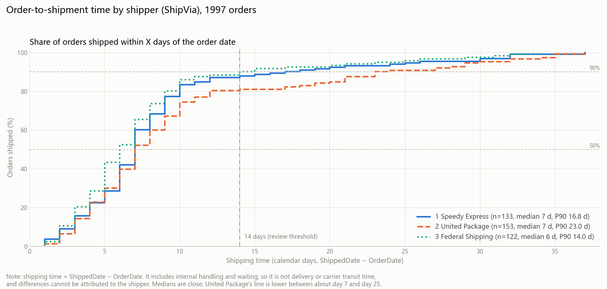
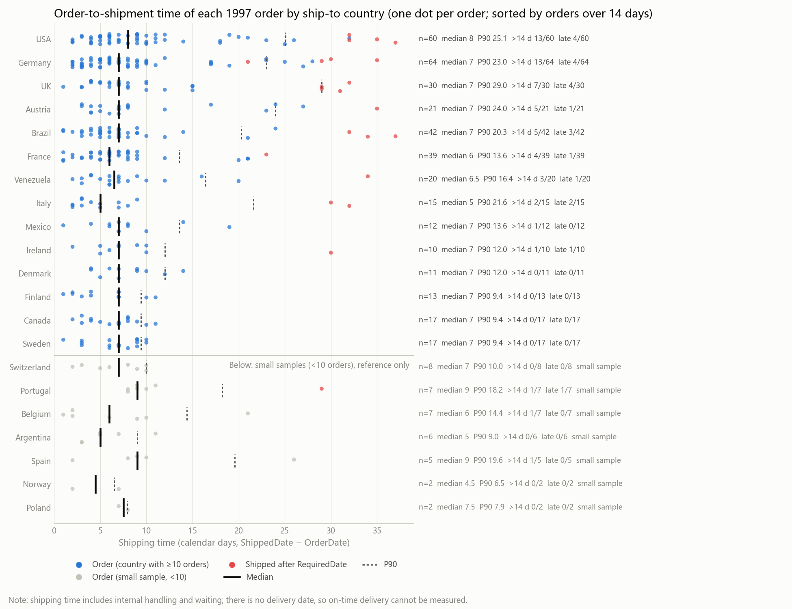

Q3 · Which order groups take longer to ship?
Short answer
Median order-to-shipment time is 5–8 days in every country with at least 10 orders, and 6–7 days for the three shippers; the difference is in the slow tail. Orders assigned to United Package have the longest tail (P90 23 days; 29/153 over 14 days), and USA and Germany hold 46% of all orders over 14 days.
Next step: trace the over-14-day orders assigned to United Package and those for the USA, Germany, UK and Austria, to see whether the time goes into stock, internal handling or waiting for pick-up. This measures order-to-shipment time, not carrier transit or delivery.
Why it matters
Slow dispatch ties up working capital and frustrates customers. Finding where the slow orders cluster tells operations managers where an investigation is most likely to pay off.
Method
Data and period: the 408 orders placed in 1997. Grain: one row per order from the Orders sheet only (no join to order lines, so nothing is double counted); shipper via ShipVia → Shippers, country = ShipCountry.
Shipping time = calendar days from OrderDate to ShippedDate — order-to-shipment time, including internal handling and waiting. Because averages hide long delays, we report the median (a typical order), the 90th percentile (the slow tail), orders over 14 days (a review threshold chosen for this analysis, not a service standard) and the share shipped after the RequiredDate, each with its denominator.
Formulas, definitions and analysis choices
ShipDays = ShippedDate − OrderDate (calendar days; missing ship date stays missing) Late = ShippedDate > RequiredDate (denominator: shipped orders) P90 = numpy linear-interpolation 90th percentile of ShipDaysOrders with OrderDate in 1997 (408). Groups with fewer than 10 orders are marked as small samples. "Over 14 days" is the review threshold chosen for this analysis.
17 reconciliation checks, all passed (q3_validation.csv).
Evidence

By shipper (ShipVia)
| Group | Orders | Missing ship date | Median days | P90 days | Over 14 days | Shipped after RequiredDate | 14-day windows | Sample |
|---|---|---|---|---|---|---|---|---|
| 2 United Package | 153 | 0 | 7 | 23.0 | 29/153 | 7.2% (11/153) | 13/153 | |
| 1 Speedy Express | 133 | 0 | 7 | 16.8 | 16/133 | 4.5% (6/133) | 11/133 | |
| 3 Federal Shipping | 122 | 0 | 6 | 14.0 | 12/122 | 4.1% (5/122) | 9/122 | |
| All | 408 | 0 | 7 | 20.3 | 57/408 | 5.4% (22/408) | 33/408 |

Required window and late shipment
| Required window (days) | Orders | Shipped after RequiredDate |
|---|---|---|
| 14 | 33 | 18.2% (6/33) |
| 28 | 345 | 4.6% (16/345) |
| 42 | 30 | 0.0% (0/30) |
| All | 408 | 5.4% (22/408) |
Findings
- All 408 orders of 1997 have a ship date; none ship before the order date. Typical shipping time is similar across shippers and countries with 10+ orders: medians are 5–8 days for every country with 10+ orders and 6–7 days for the shippers.
- Differences are in the tail. United Package has the highest P90 (23 days), the most orders over 14 days (29/153) and the highest share shipped after RequiredDate (7.2%). Between day 7 and day 25 its share of orders already shipped is 4.3–13.7 points below the better of the other two shippers and 3.0–10.1 points below the weaker one.
- USA (13) and Germany (13) have the most orders over 14 days, 46% of all long orders. UK has the highest P90 among countries with 10+ orders (29 days) and 4/30 shipped late.
- Orders with a 14-day required window were shipped late 18.2% of the time vs 4.6% for 28-day windows, so late shares also reflect the required window.
Business interpretation and next steps
- Start with the long-tail orders assigned to United Package: check where the time goes (stock, internal handling, pick-up). This is not evidence that the carrier is slower.
- Review the over-14-day orders for the USA, Germany, UK and Austria order by order; small-sample countries are not a priority on this evidence.
- Consider tracking 14-day-window orders separately, since they are the ones most often shipped late.
These are candidate directions for further evaluation, not decisions the data can settle on its own.
Limitations and boundaries
- No delivery date: on-time delivery cannot be measured; "shipped after RequiredDate" is about dispatch.
- Shipping time is not carrier transit time: it includes internal processing and waiting, so differences cannot be attributed to the shipper or the country.
- P90 in groups of 10–30 orders depends on the slowest one to three orders; small groups (<10) are reference only; no significance tests.
- The 14-day review threshold is an analysis choice, not a service standard. Orders are grouped by order date, so December orders shipped in January count in 1997.
Supplementary material and downloads
Supplementary charts and tables
All ship-to countries (same order as the chart)
| Group | Orders | Missing ship date | Median days | P90 days | Over 14 days | Shipped after RequiredDate | 14-day windows | Sample |
|---|---|---|---|---|---|---|---|---|
| USA | 60 | 0 | 8 | 25.1 | 13/60 | 6.7% (4/60) | 3/60 | |
| Germany | 64 | 0 | 7 | 23.0 | 13/64 | 6.2% (4/64) | 5/64 | |
| UK | 30 | 0 | 7 | 29.0 | 7/30 | 13.3% (4/30) | 4/30 | |
| Austria | 21 | 0 | 7 | 24.0 | 5/21 | 4.8% (1/21) | 1/21 | |
| Brazil | 42 | 0 | 7 | 20.3 | 5/42 | 7.1% (3/42) | 5/42 | |
| France | 39 | 0 | 6 | 13.6 | 4/39 | 2.6% (1/39) | 4/39 | |
| Venezuela | 20 | 0 | 6.5 | 16.4 | 3/20 | 5.0% (1/20) | 2/20 | |
| Italy | 15 | 0 | 5 | 21.6 | 2/15 | 13.3% (2/15) | 0/15 | |
| Mexico | 12 | 0 | 7 | 13.6 | 1/12 | 0.0% (0/12) | 2/12 | |
| Ireland | 10 | 0 | 7 | 12.0 | 1/10 | 10.0% (1/10) | 1/10 | |
| Denmark | 11 | 0 | 7 | 12.0 | 0/11 | 0.0% (0/11) | 2/11 | |
| Finland | 13 | 0 | 7 | 9.4 | 0/13 | 0.0% (0/13) | 0/13 | |
| Canada | 17 | 0 | 7 | 9.4 | 0/17 | 0.0% (0/17) | 1/17 | |
| Sweden | 17 | 0 | 7 | 9.4 | 0/17 | 0.0% (0/17) | 2/17 | |
| Switzerland | 8 | 0 | 7 | 10.0 | 0/8 | 0.0% (0/8) | 1/8 | small (<10) |
| Portugal | 7 | 0 | 9 | 18.2 | 1/7 | 14.3% (1/7) | 0/7 | small (<10) |
| Belgium | 7 | 0 | 6 | 14.4 | 1/7 | 0.0% (0/7) | 0/7 | small (<10) |
| Argentina | 6 | 0 | 5 | 9.0 | 0/6 | 0.0% (0/6) | 0/6 | small (<10) |
| Spain | 5 | 0 | 9 | 19.6 | 1/5 | 0.0% (0/5) | 0/5 | small (<10) |
| Norway | 2 | 0 | 4.5 | 6.5 | 0/2 | 0.0% (0/2) | 0/2 | small (<10) |
| Poland | 2 | 0 | 7.5 | 7.9 | 0/2 | 0.0% (0/2) | 0/2 | small (<10) |
| All | 408 | 0 | 7 | 20.3 | 57/408 | 5.4% (22/408) | 33/408 |
Download the full result tables (CSV)
- q3_by_country.csv — Ship-country table with denominators
- q3_by_country_raw.csv — Ship-country table, full precision
- q3_by_shipper.csv — Shipper table with denominators
- q3_by_shipper_raw.csv — Shipper table, full precision
- q3_orders_1997.csv — All 408 orders of 1997 with shipping days
- q3_required_window_vs_late.csv — Required window vs shipped after RequiredDate
- q3_shipper_cumulative_share_by_day.csv — Share shipped within X days, by shipper
- q3_validation.csv — Reconciliation checks (expected, actual, pass)
CSV files are UTF-8 with BOM; some headers are in Chinese.